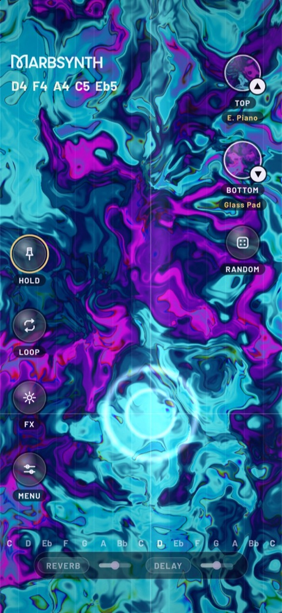
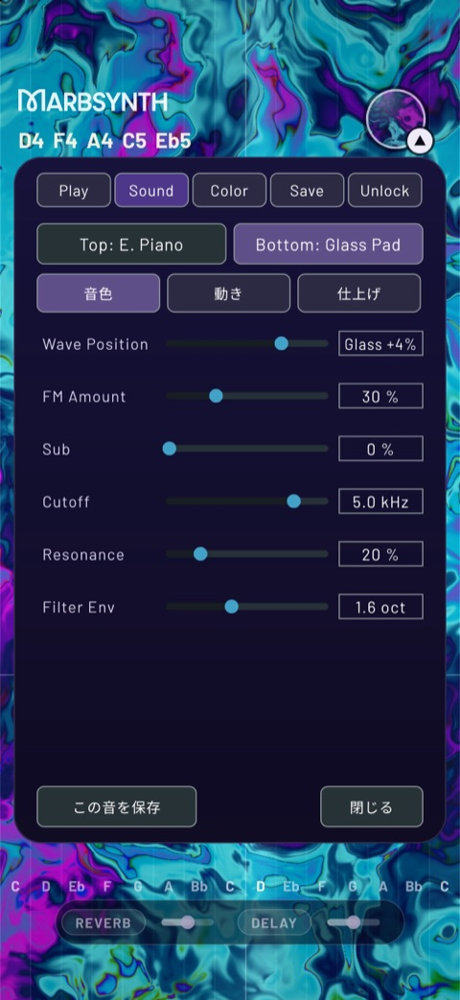
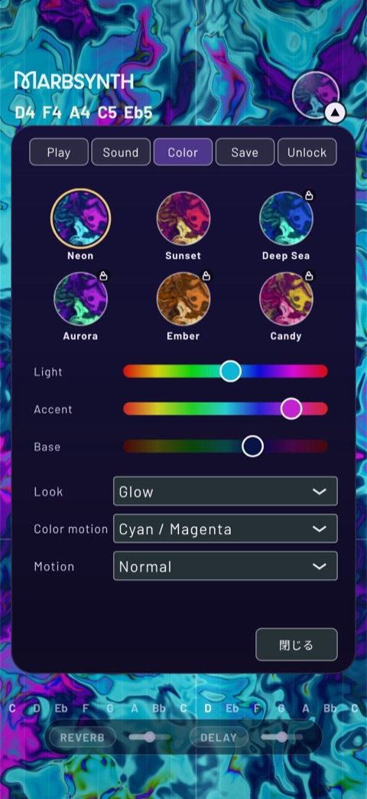
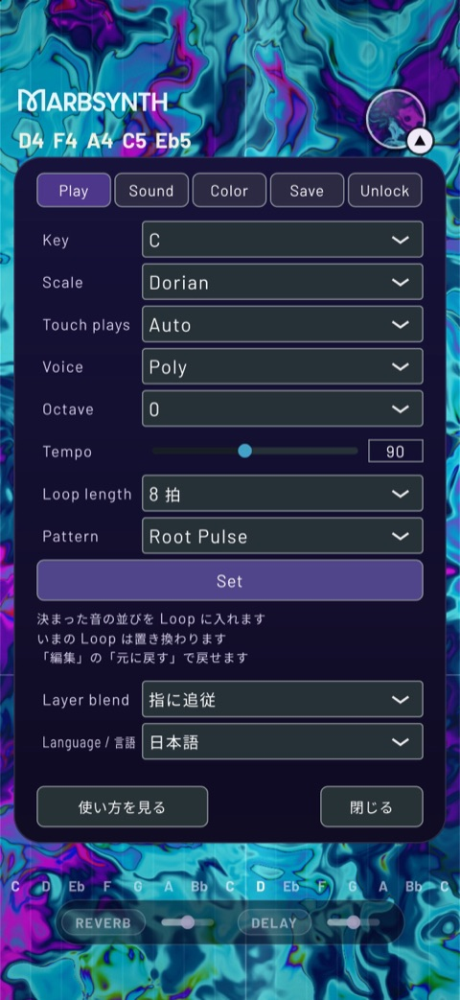
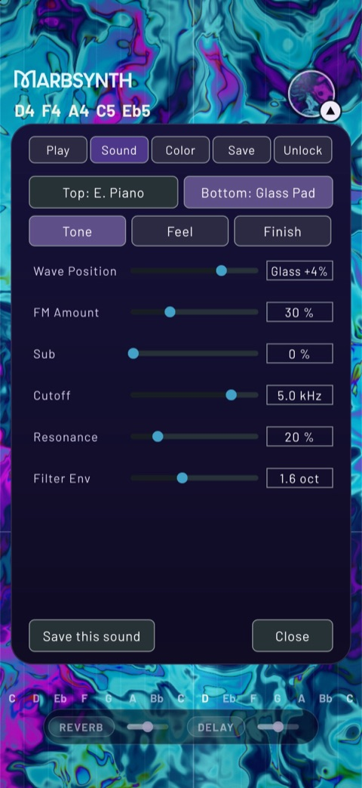
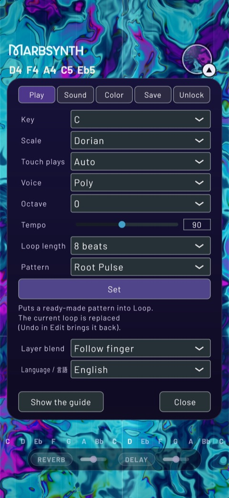

Marbsynth
マーブル模様の
横は
An iPhone app where you play two blended sounds by touching a marble picture.
Left and right change the pitch. Up and down blend the sounds.
デモ動画 / Demo
音が出ます。音量にご注意ください。
Sound on. Mind the volume.
使い方
- 触れるマーブルの
絵に 触れると 音が 鳴ります。
横は音程 縦は 音の 混ざりです。
指を動かすと 音と 色が 少しずつ 変わります。 - 音を
選ぶ Top と Bottom で好きな 音を 選びます。
上に動かすと Top が 強くなり 下に 動かすと Bottom が 強くなります。 - 鳴らし続ける
・くり返す Hold は指を 離しても 鳴らし続けます。
Loop は指の 動きを 録ってくり返します。
FX でループや Hold の 音を 指で 変えられます。 - 響きを
足す 下のバーで Reverb と Delay を 足せます。
文字を押すと オンと オフを 切り替えられます。
気に
How to play
- TouchTouch the marble picture to make sound. Left and right change the pitch. Up and down blend the two sounds. Moving your finger shifts sound and color together.
- Pick soundsChoose a sound for Top and for Bottom. Move up for more Top and down for more Bottom.
- Hold and loopHold keeps the sound going after you lift your finger. Loop records your finger movement and repeats it. FX changes the sound of loops and Hold with your finger.
- Add spaceAdd Reverb and Delay from the bar at the bottom. Tap the label to turn each on or off.
画面 / Screenshots
日本語




English


無料と Pro / Free and Pro
演奏の
Playing is free. Pro is a one-time purchase. No subscription and no ads.
| 無料 / Free | Pro | |
| 音色 Sounds | 6 | 26 |
| 保存 Saves | 4 | 無制限 / Unlimited |
| 配色 Colors | 2 | 6 + 色相の |
| リズム Rhythms | 4 | 14 |
| パターン Patterns | 4 | 20 |
対応機種: iPhone (iOS 16 以降) / Requires iPhone with iOS 16 or later